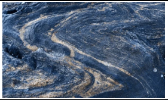
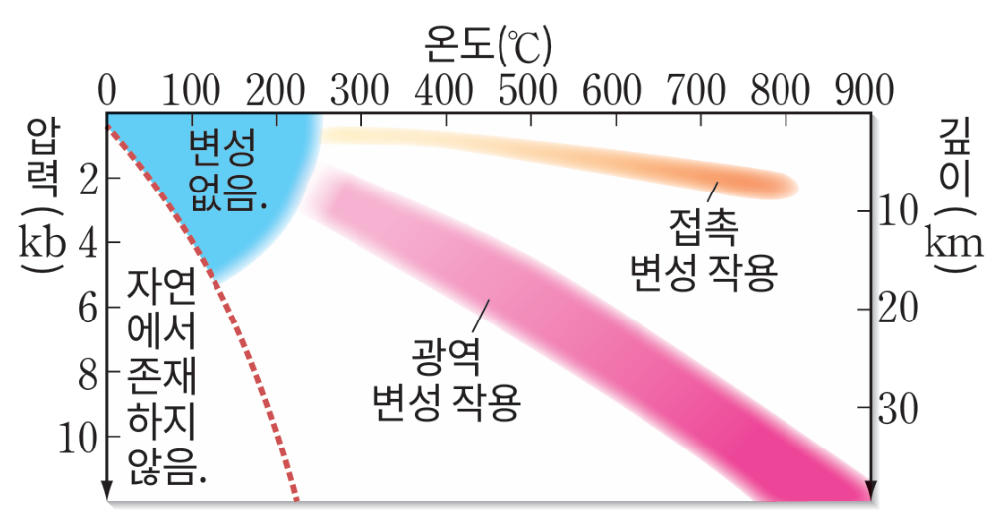
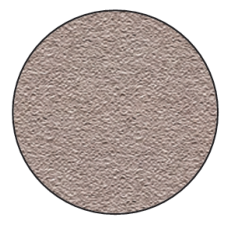
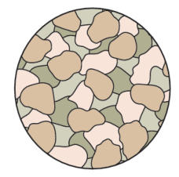
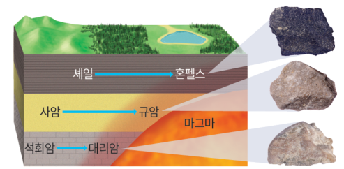
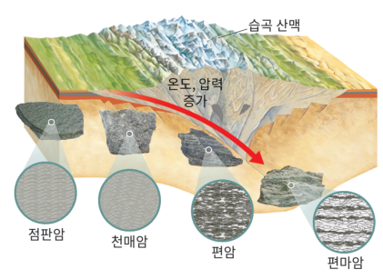
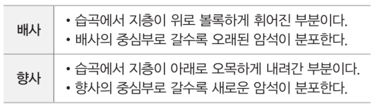
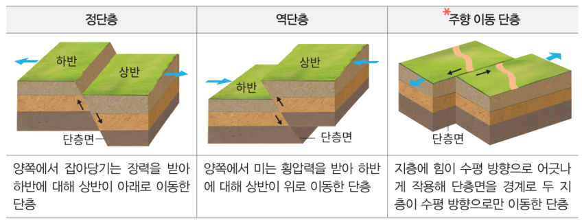
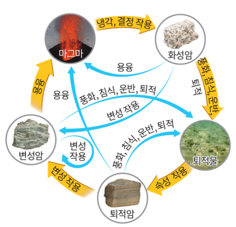

학습 목표 (Learning Objectives)
- ✓접촉 변성 작용과 광역 변성 작용의 원리와 생성되는 변성암의 조직(혼펠스 조직·엽리)을 설명할 수 있다.
- ✓습곡(배사·향사)과 단층(정단층·역단층·주향 이동 단층)의 생성 과정을 판의 경계와 연결하여 설명할 수 있다.
핵심 개념 체크리스트
학습을 마친 개념은 직접 체크해보세요!
2026 사대부고 고2 지구과학 자체 교재 원문 기반
동기 유발 · 생각해보기
수업 시작 전 핵심 질문
Q. 주변의 산이나 계곡에서 볼 수 있는 바위 중에는 검은색과 흰색 광물이 뚜렷한 줄무늬를 이루고 있는 암석(편마암)들이 많다. 원래는 줄무늬가 없던 돌에 어떻게 이런 무늬가 만들어졌을까?


💡 먼저 스스로 이유를 추론해 본 뒤 버튼을 눌러 확인해보세요!
✨ 과학적 해설 및 모범 답안
기존의 암석이 조산 운동 등 대규모 지각 변동으로 지하 깊은 곳에서 높은 열과 한쪽 방향에서 미는 강한 압력(횡압력)을 받으면, 암석이 녹지 않은 상태에서 광물들이 재결정 작용을 거치며 압력의 방향에 수직으로 나란히 배열되어 줄무늬 구조(엽리: 편리·편마 구조)를 형성하기 때문입니다.
핵심 개념 1
1. 변성 작용의 종류와 변성암의 조직
(1) 접촉 변성 작용 vs 광역 변성 작용 (교재 p.50~51)
- •변성 작용과 재결정 작용: 기존 암석이 생성 당시보다 높은 온도나 압력을 받아 고체 상태에서 광물의 성분이 변하거나 결정 크기가 커지고 배열이 달라지는 작용
- •① 접촉 변성 작용: 마그마가 관입한 접촉부 주변의 좁은 범위에서 주로 높은 열(온도 상승)에 의해 일어난다. 방향성 압력이 없으므로 줄무늬(엽리)가 없고 치밀한 혼펠스 조직이나 결정이 큼직하게 자란 입상 변정질 조직(규암, 대리암)이 나타난다.
- •② 광역 변성 작용: 조산대(수렴형 경계) 등 넓은 지역에서 높은 열과 강한 압력을 동시에 받아 일어난다. 압력이 작용한 방향에 수직 방향으로 광물이 나란히 배열된 엽리(Foliation: 편리·편마 구조)가 발달한다.
- •⭐ 셰일(이암)의 변성 과정 암기:
▸ 접촉 변성(열): 셰일 ➔ 혼펠스
▸ 광역 변성(열+압력 증가 순): 셰일 ➔ 점판암(슬레이트) ➔ 천매암 ➔ 편암(편리) ➔ 편마암(편마 구조)
▸ 사암 ➔ 규암 / 석회암 ➔ 대리암 (열과 압력을 모두 받아도 엽리가 잘 생기지 않고 입상 변정질 조직을 이룸!)

" class="max-h-72 w-auto object-contain rounded-lg group-hover:scale-[1.02] transition duration-300 cursor-zoom-in" onclick="openLightbox(this.src, '교재 그림: <온도와 압력 조건에 따른 접촉 변성 작용과 광역 변성 작용의 범위>')" loading="lazy" />
" class="max-h-72 w-auto object-contain rounded-lg group-hover:scale-[1.02] transition duration-300 cursor-zoom-in" onclick="openLightbox(this.src, '교재 그림: <혼펠스 조직>')" loading="lazy" />
" class="max-h-72 w-auto object-contain rounded-lg group-hover:scale-[1.02] transition duration-300 cursor-zoom-in" onclick="openLightbox(this.src, '교재 그림: <입상 변정질 조직>')" loading="lazy" />
" class="max-h-72 w-auto object-contain rounded-lg group-hover:scale-[1.02] transition duration-300 cursor-zoom-in" onclick="openLightbox(this.src, '교재 그림: <접촉 변성암과 광역 변성암의 생성 비교>')" loading="lazy" />
" class="max-h-72 w-auto object-contain rounded-lg group-hover:scale-[1.02] transition duration-300 cursor-zoom-in" onclick="openLightbox(this.src, '교재 그림: <엽리(편리와 편마 구조)의 형성 원리와 변성암 사진>')" loading="lazy" />
핵심 개념 2
2. 지질 구조(습곡·단층)와 암석의 순환
(1) 습곡과 단층의 종류 및 판의 경계 (교재 p.52)
- •습곡 (Fold): 비교적 온도와 압력이 높은 지하 깊은 곳에서 양쪽에서 미는 횡압력을 받아 지층이 휘어진 구조 (위로 볼록한 부분 = 배사, 아래로 오목한 부분 = 향사, 습곡축면 기울기에 따라 정습곡·경사습곡·등사습곡·횡와습곡으로 구분)
- •단층 (Fault): 비교적 온도와 압력이 낮은 지각 상부에서 힘을 받아 지층이 끊어지며 이동한 구조. 경사진 단층면의 위쪽 지괴를 상반, 아래쪽 지괴를 하반이라 한다.
| 단층 종류 | 작용하는 힘 | 상반의 이동 방향 | 발달하는 판의 경계 |
|---|---|---|---|
| 정단층 | 양쪽으로 잡아당기는 장력 | 상반이 아래로 내려감 | 발산형 경계 (해령, 동아프리카 열곡대) |
| 역단층 | 양쪽에서 미는 횡압력 | 상반이 위로 올라감 (경사 완만 시 오버트러스트) | 수렴형 경계 (섭입대, 충돌대 조산대) |
| 주향 이동 단층 | 수평 방향으로 어긋나는 힘 | 수평 방향으로 어긋남 | 보존형 경계 (변환 단층) |

" class="max-h-72 w-auto object-contain rounded-lg group-hover:scale-[1.02] transition duration-300 cursor-zoom-in" onclick="openLightbox(this.src, '교재 그림: <습곡의 구조(배사와 향사) 및 종류>')" loading="lazy" />
" class="max-h-72 w-auto object-contain rounded-lg group-hover:scale-[1.02] transition duration-300 cursor-zoom-in" onclick="openLightbox(this.src, '교재 그림: <단층의 구조(상반·하반)와 정단층·역단층·주향 이동 단층>')" loading="lazy" />
" class="max-h-72 w-auto object-contain rounded-lg group-hover:scale-[1.02] transition duration-300 cursor-zoom-in" onclick="openLightbox(this.src, '교재 그림: <지구 시스템에서의 암석의 순환(화성암 ↔ 퇴적암 ↔ 변성암)>')" loading="lazy" />
Interactive Checkpoints
클릭하면 교재 빈칸 정답과 해설이 나타납니다
단원 개념 적용하기 & 확인 문제
Q1
교재 p.51 확인: 퇴적암인 '셰일'이 마그마 관입부 주변에서 높은 열을 받아 생성되는 암석과, 조산 운동으로 높은 열과 압력을 함께 받아 변성도가 높아질 때 생성되는 암석을 비교하시오.
모범 답안 및 해설
• 마그마 관입부 주변(접촉 변성 작용): 치밀하고 단단한 혼펠스가 생성됩니다.• 조산 운동 지역(광역 변성 작용): 압력에 수직으로 엽리가 발달하며 온도와 압력이 높아짐에 따라 점판암 ➔ 천매암 ➔ 편암 ➔ 편마암 순으로 변성됩니다.
Q2
교재 p.52 확인: 단층면 위에 놓인 상반이 아래로 내려간 단층의 명칭, 작용한 힘, 그리고 주로 발달하는 판의 경계는?
모범 답안 및 해설
상반이 내려간 단층은 정단층이며, 양쪽으로 잡아당기는 장력에 의해 형성되고 주로 해령이나 열곡대 같은 발산형 경계에서 발달합니다.